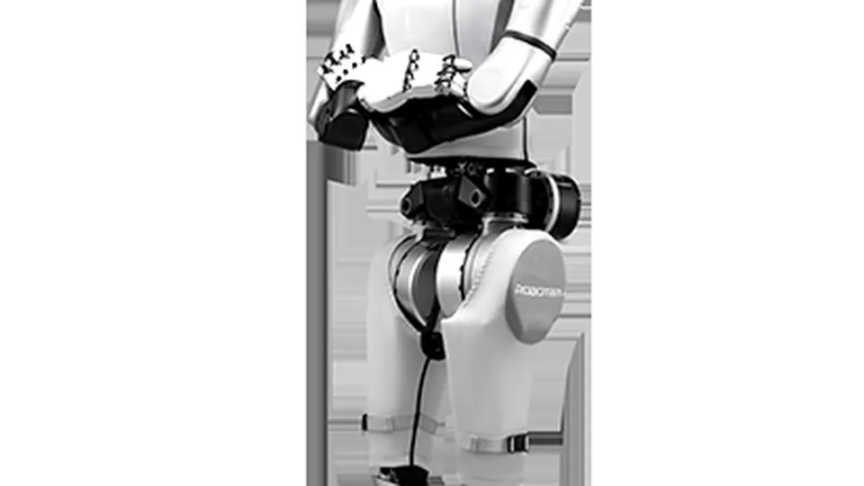
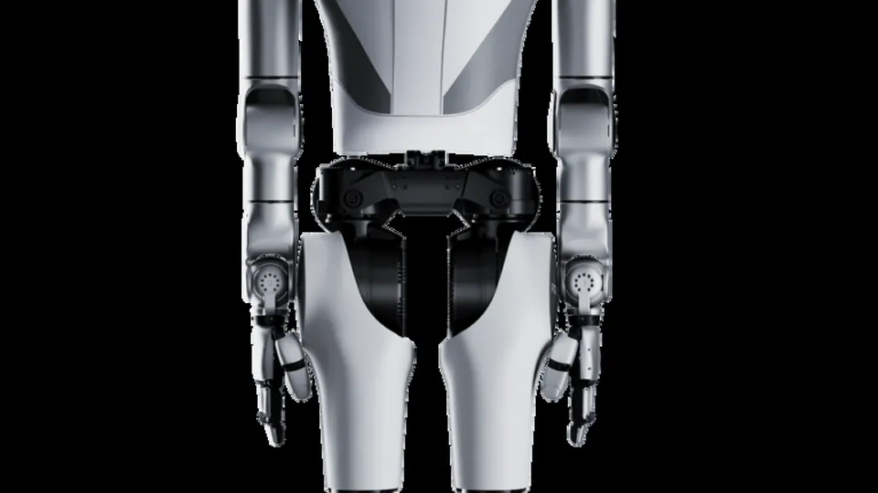

ROBOTERA's VPP2 takes No. 1 on RoboDojo: an open-sourced world action model for general-purpose robots
ROBOTERA has announced that VPP2, its second-generation 'world action model,' has ranked No. 1 on RoboDojo, a benchmark for general-purpose robot manipulation built by the University of Hong Kong's MMLab with nearly 20 academic institutions. The company also open-sourced the model on GitHub.
ROBOTERA announced on October 10, 2026 that VPP2 — short for Video Prediction Policy 2, the company's World Action Model (WAM) — has ranked No. 1 on RoboDojo, a benchmark designed to measure general-purpose robot manipulation beyond simple demonstrations. Notably, the company says the result was achieved without additional training data or agent-based reinforcement self-improvement (Agent RSI): no extra data-collection or self-play crutches, just the model.
RoboDojo was developed by the University of Hong Kong's MMLab in collaboration with nearly 20 leading academic institutions worldwide, and evaluates performance across simulation and real-world tasks. On it, VPP2 posted an average success rate of 32.26% and an average score of 39.26, ranking first in the Generalization, Precision, and Memory dimensions among the evaluated methods.
Predict first, then act
The core idea of a world action model is to merge two jobs: predicting how a robot's actions will change its surroundings, and generating the actions themselves. Unlike video models built to generate visual content, VPP2 is trained to understand object movements and follow precise manipulation instructions — it combines video prediction with action generation so a robot can translate instructions into physical movements more reliably across different objects, environments, and scenarios. For complex multi-step tasks, the model can also work alongside a vision-language model that breaks high-level instructions into smaller executable actions.

Open-sourced, with a research trail
ROBOTERA has open-sourced VPP2 on GitHub. The underlying research, titled "Video Prediction Policy 2: Predict Better, Act Better," is listed as a 2026 preprint by Yanjiang Guo (a Tsinghua PhD researcher and former Stanford visiting scholar) and collaborators, with code and a Hugging Face page linked from the project site. The paper describes a world action model with strong zero-shot generalization in video prediction and action generation, built from event-level video pretraining, single-step visual planning, and a mixture-of-transformers action module.
The rest of the scorecard
Beyond RoboDojo, the release cites results on familiar robot-learning benchmarks. On the ALOHA platform, VPP2 averaged a 58.5% success rate across 10 task categories, outperforming leading baselines in nine of them; on LIBERO-Pro, a benchmark for robotic manipulation and generalization, it reached 45.0%. With high-level task planning added, average success rates across five task groups more than doubled, from 27.6% to 57.6% — the kind of uplift that suggests planning and execution, not raw control, is where the biggest gains remain.

Why it matters
ROBOTERA says this is its fourth benchmark championship in embodied intelligence in 2026, following wins at World Arena, Benjie's Humanoid Olympic Games, and RoboChallenge — and that its humanoid robots are already deployed with China Post and SF Express across more than 10 logistics centers in China. The honest caveat: a 32.26% success rate shows that general-purpose manipulation is nowhere near solved; benchmarks like RoboDojo are designed to be brutally hard. But the pattern is the story — prediction-based world models, released open-source, are steadily converting benchmark leads into warehouse jobs.